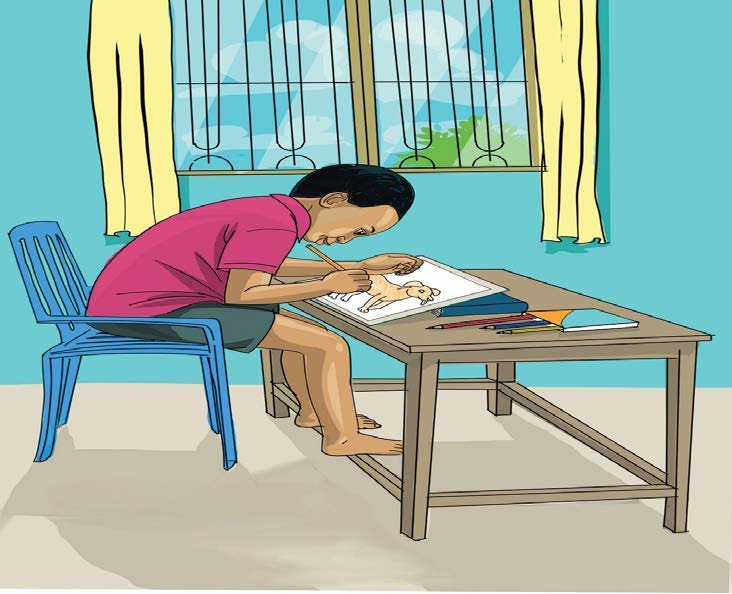

Kuchora
Kuchora ni sanaa ya kuunda picha kwenye karatasi au uso wa kitu chochote. Unaweza kutumia penseli, mkaa au chaki katika kuchora.
Chunguza picha, kisha jibu maswali yafuatayo:

Maswali
Shughuli ya sita
Chora picha ya meza, kisha tia nakshi uipendayo.